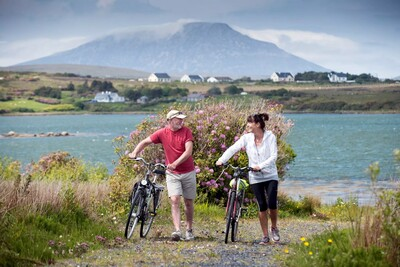
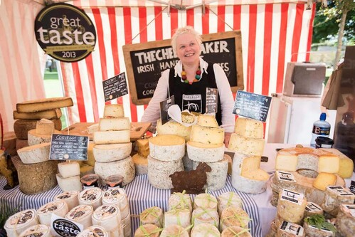
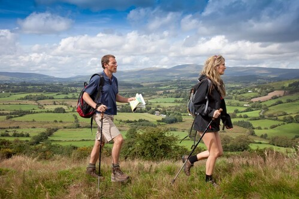

The month of May in Ireland is full of life. We’re talking green scenery, flowers in bloom and brighter, sunnier days. It’s the perfect time to set off on a grand tour along places like the Wild Atlantic Way or the Causeway Coastal Route, witness the thrilling speed of world-class racers at the International North West 200 festival or relax and make the most of eco-friendly stays. It’s the time when foals are born, gardens flourish and Star Wars celebrations ensue. Who’s coming?
Cycling
Thanks to longer, brighter days, May is the perfect time to embark on a scenic cycling trail. Ireland's landscapes create memorable moments for cyclists winding their way along off-road cycling routes such as the Great Western Greenway, which stretches from the town of Westport to Achill Island. In Northern Ireland, there’s no better way to see County Fermanagh than along the Kingfisher Trail, a softly undulating route that suits all manner of cyclists. Loop around the inky waters of Lough Erne, then make your way to the majestic Cuilcagh Mountains. It’s easy to explore our cities by bike, too. In Dublin, Cork, Galway, Limerick and Belfast, bikes can be hired from multiple pick-up and drop-off points enabling you to explore each city at leisure. If you’d prefer a guided tour: check out Belfast City Bike Tours for an in-depth pedal around the city, or Phoenix Park Bike Tours in Dublin, which takes you through the glorious parklands that are home to the President of Ireland, Dublin Zoo and hundreds of deer.
Ireland’s food markets
Spring means a fresh crop of delicious local Irish produce is ready for tasting at food and farmers’ markets around the island. Every Sunday, the People’s Park Market in the seaside town of Dún Laoghaire – near Dublin – has an array of locally made products to savour, such as honey, cheese and sweet treats. Yum! In Belfast, stop by St George’s Market, which has been running since the late 1890s. It’s open Friday to Sunday, and sells a HUGE range of tasty items, from fresh fish and coffee beans to chutneys and cakes. Add to that live music, friendly vendors and colourful stalls, and you’ve got yourself a great day out. At the other end of the island in Cork, don’t miss the world-renowned English Market, a staple in the heart of the city since 1788! As for the street food scene in Ireland, be on the lookout for food trucks at scenic spots along great coastal routes such as the Wild Atlantic Way. The Misunderstood Heron is one such place in the wilds of Connemara. Fresh and local is the order of the day here with Killary Fjord mussels and Killary mountain lamb samosas on the menu. Delicious.
Travel tips for visiting Ireland in May
Spring has well and truly sprung here on the island of Ireland come May. And while the weather can still be quite changeable, you’re more likely to see some nice stretches of sunshine as the days grow longer and the flowers continue to bloom. The temperature ranges from 11° to 15°, which means that layers are your friend. Bring shirts, rain jackets and a jumper or two so you’re prepared for anything. It’s a great time of the year to take in the scenery, especially on a scenic road trip. Or go at a more leisurely pace and enjoy one of the island’s many walking trails. And if you fancy getting off-the-beaten-track, we can let you in on some of Ireland's best kept secret spots that are sure to take your breath away.
| The coast of Ireland | Walking |
|---|---|
| Ireland’s landscapes | Outdoor activities |